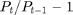
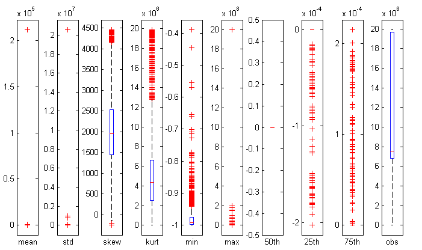

Check stats Trades db
After a quick filtered selection the data has still non-negligible problems and needs to be cleaned.
Contents
Select data and boxplot
I kept only those prices that met the following conditions:
- No corrections: corr == 0
- No anomalous sale conditions: cond == {'E', 'F', ' '}
- No zero prices
- No overnight returns
Then, I calculated returns as  and ran descriptive stats on all 1815 .mat files and results follow in the following boxplot.
load('C:\Users\ok1011\Dropbox\Uni\Imperial\TAQ\stats.mat') figure('pos',[360 282 700 416]) axes; boxplot(out(:,1),'labels','mean'); set(gca,'un','norm','pos',[0.04 0.06 0.05 0.86]) axes; boxplot(out(:,2),'labels','std'); set(gca,'un','norm','pos',[0.135 0.06 0.05 0.86]) axes; boxplot(out(:,3),'labels','skew'); set(gca,'un','norm','pos',[0.24 0.06 0.05 0.86]) axes; boxplot(out(:,4),'labels','kurt'); set(gca,'un','norm','pos',[0.335 0.06 0.05 0.86]) axes; boxplot(out(:,5),'labels','min'); set(gca,'un','norm','pos',[0.43 0.06 0.05 0.86]) axes; boxplot(out(:,6),'labels','max'); set(gca,'un','norm','pos',[0.525 0.06 0.05 0.86]) axes; boxplot(out(:,7),'labels','50th'); set(gca,'un','norm','pos',[0.62 0.06 0.05 0.86]) axes; boxplot(out(:,8),'labels','25th'); set(gca,'un','norm','pos',[0.715 0.06 0.05 0.86]) axes; boxplot(out(:,9),'labels','75th'); set(gca,'un','norm','pos',[0.81 0.06 0.05 0.86]) axes; boxplot(out(:,10),'labels','obs'); set(gca,'un','norm','pos',[0.905 0.06 0.05 0.86]) snapnow
I double checked results on WRDS
Follows a snapshot of a problematic series ZVZZT taken directly from WRDS